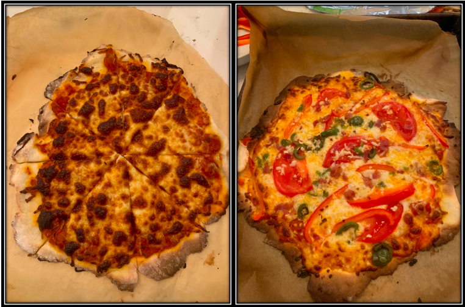

GF Pizza that Rocks

Since HD went gluten free, we’ve found a few decent gluten free pizza places around the ‘ville and beyond. But, it’s only been OK. Never quite crispy enough for thin crust, and inconsistent from place to place. So, I decided to set out and make my own at home.
I culled through a bunch of recipes, but was always unsatisfied. Years ago, a friend of mine gave me an excellent recipe that is delightful for its inexactness and yet consistent excellent performance. Everything I saw involved tons of different ingredients, or really was just GF bread dough rolled out - which seemed OK, but, I still wasn’t sure it would get the right texture.
In reading around about GF baking in general, though, I kept running into this odd ingredient that appeared to improve texture of dough - or could even over-correct! Expandex - a modified tapioca startch. I had some in my pantry from my early days of starting the GF journey, but had never used it.
What if, I wondered, I used a GF flour that is ideal for pies and pastries, but added in some expandex to improve dough texture to give it better chew? Could I get back to something that works well for pizza.
The answer is - hell yes.
So, here’s my friend Jarrod’s recipe (his writing!), modified for GF use, with links to the products used, and a few small changes.
Gluten Free Pizza Dough
For the dough, if you’re feeling courageous:
Ingredients
About 1 cup of water, shower temperature
About 2 3/4 cups Cup4Cup GF flour (I suppose other pastry-oriented GF flours will work, too)
1/4 Cup of Expandex modified tapioca starch
1 teaspoon to 1 tablespoon of salt, your preference on dough saltiness
1 packet (2 1/4 tsp) of yeast
generous pinch of sugar or squirt of honey
Utensils
Big spoon
Flat surface
Big bowl
2 cookie sheets (or one really huge one)
In a big bowl, mix the water, sugar or honey, and yeast. Cool your heels for five minutes.
Mix in the flour and salt, and maybe a glug of olive oil.
Stir and mix into in a good sticky ball that holds together. Let rise in a ball in an oiled bowl for 45 min - 1 hr.
Put some oil in the bowl so the dough doesn’t stick. Put the kneaded dough back in the bowl. Cover it up and put it in a not-cold (could be warm; doesn’t really matter) place for 20-30 minutes.
Divide into halves for big pans of thirds for rounds.
For halves, make sure the surface is floured with rice flour or somesuch and roll out the dough really really flat (1/8”?). Then lift it up, drape it over your cookie sheet, and either trim the edges or fold them down. For thirds, roll out rounds like a pie crust. Trim edges if you like, or fold for a bit more chewiness.
Put yummy things on top.
Bake in a 500-or-so-degree oven until it’s brown, but not dark brown. 10-12 minutes.
Bottom rack can be a-ok for GF dough. Not classic gluten dough. Why? Dunno! But you still might want to flip oven placement halfway if you’re doing two.